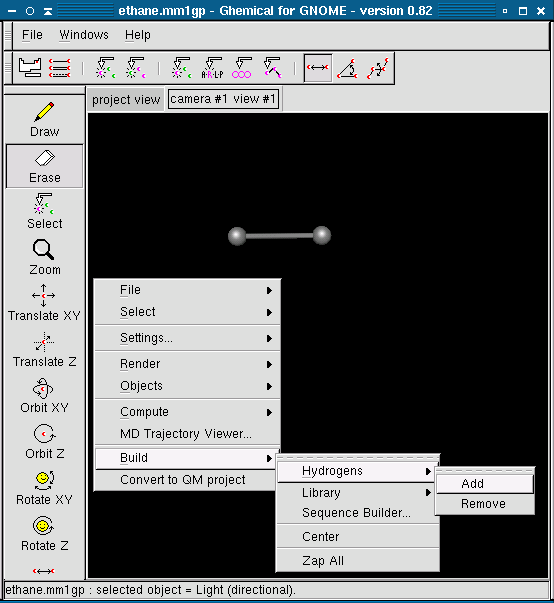
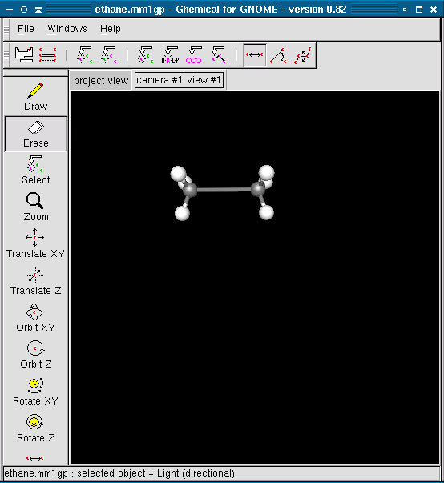
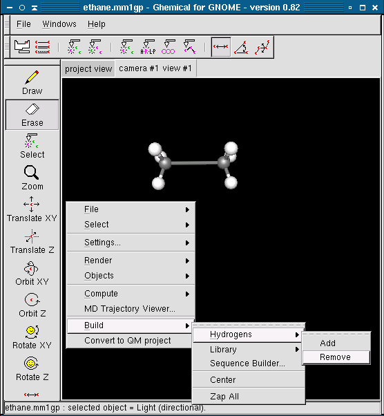

Instead of individually adding hydrogens to your molecule you may use the Add Hydrogens tool to add hydrogens to all open valences. After you've added all the non-hydrogen atoms to your molecule, right click on the display and select Build from the popup menu. Select Hydrogens from this menu and then pick Add.
Ghemical will then automatically add hydrogens to your molecule. Ghemical makes a simple attempt to position the hydrogens at their most stable orientation (tetrahedral in the case of carbon) however the molecule should still be optimized to get a more accurate geometry.
Ghemical also provides a tool to remove all hydrogen atoms from the molecule. It is activated by right clicking on the view, selecting Build from the menu, selecting Hydrogens from the submenu and then selecting Remove
